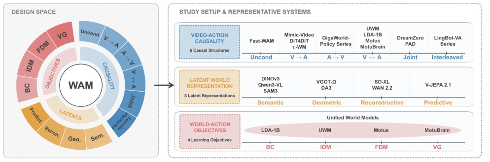
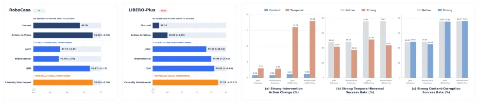
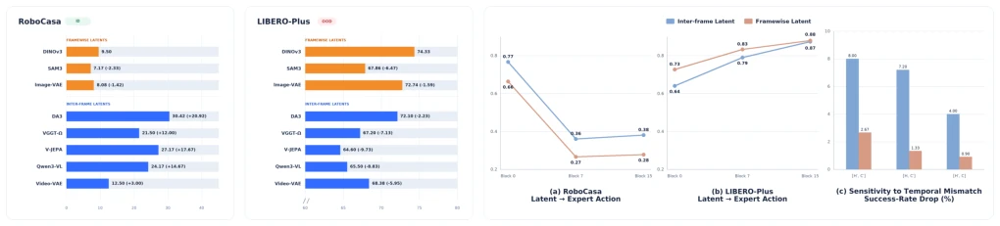
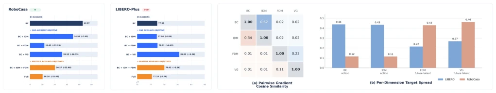

这篇论文堪称 WAM 领域的“祛魅”之作。在大家忙着堆砌 Transformer 层数、搞各种 Video-Action 耦合的狂欢中，作者冷静地按下了暂停键。它没有提出新的 SOTA 架构，而是像外科医生一样解剖现有设计，质问“到底哪个部件在起作用”。亮点在于其严谨的对照实验，揭示了“未来视频内容不重要，时间结构才重要”的反直觉结论。缺点嘛，实验规模受限于中等算力，结论在超大模型下是否依然成立存疑，且对真实世界的验证仅停留在离线动作预测，闭环控制效果未深究。不过，对于被各种“统一框架”忽悠的社区来说，这是一剂清醒剂，证明了简单有时比复杂更有效，避免了过度设计带来的性能陷阱。
This paper can be regarded as a "disenchantment" work in the WAM field. Amidst the frenzy of everyone busy stacking Transformer layers and engaging in various Video-Action couplings, the authors calmly pressed the pause button. It does not propose a new SOTA architecture, but rather dissects existing designs like a surgeon, questioning "which component actually works". The highlight lies in its rigorous controlled experiments, revealing the counter-intuitive conclusion that "future video content is not important, temporal structure is what matters". As for drawbacks, the experimental scale is limited by moderate computing power, it is questionable whether the conclusions still hold under super-large models, and validation on the real world is limited to offline action prediction, with closed-loop control effects not deeply investigated. However, for the community misled by various "unified frameworks", this is a sobering agent, proving that simple is sometimes more effective than complex, avoiding performance traps brought by over-design.
Existing WAM systems [1]-[10] have surged in number, but most bundle architecture, training strategies, and representation spaces together for optimization, leading to an inability to isolate the impact of single design choices. As pointed out by [37], although WAM is robust to noise, it lacks systematic understanding. Existing research either evaluates complete systems or only examines narrow dimensions, unable to distinguish whether performance improvements stem from better world representations, more effective action conditioning, or simply data engineering. This leads to a lack of controlled research in the field to explain how design dimensions shape policy behavior. This paper aims to answer these three core questions—video-action causal structure, latent space selection, and modeling objectives—through controlled empirical research, providing principled guidance for future WAM development, rather than simply pursuing benchmark scores.

Fig. 1: This work systematically investigates three fundamental aspects in building WAMs: (1) video-action causality, (2) latent world representation, and (3) world-action modeling objectives.
The study adopts a controlled experimental framework with a fixed backbone model and variable design. First, regarding video-action causality, 6 structures were compared: decoupled/unconditional, video-to-action, action-to-video, bidirectional, joint, and causal interleaved generation. Second, regarding latent representations, 4 categories were compared: semantic (e.g., DINOv3), geometric, reconstruction (VAE), and predictive latent spaces. Finally, regarding modeling objectives, combinations of Behavior Cloning (BC), Inverse Dynamics Model (IDM), Forward Dynamics Model (FDM), and Video Generation (VG) were tested. All variants were trained on the RoboCasa-GR1, LIBERO, and DROID datasets, maintaining consistent training pipelines. Specifically, for the causal interleaved mode, a single-stream causal abstraction was adopted to maintain architectural consistency. Causal influence was verified by intervening on generated future latent variables (content destruction, time reversal), rather than relying solely on structural comparisons.
在 RoboCasa-GR1（ID）和 LIBERO-Plus（OOD）上进行仿真评估，并在 DROID 真实机器人数据上验证离线动作预测。主要发现包括：1）生成未来主要通过时间结构影响动作，内容破坏影响小，但时间反转显著降低成功率，尤其在 OOD 下；2）帧间潜在表征利于 ID 控制，但帧级潜在（如 DINOv3）在 OOD 下更鲁棒；3）辅助目标（如 VG）在 OOD 下提升性能，但在 ID 下因容量分散而降低性能，需分阶段训练。DROID 验证显示因果交错和帧级表征在真实数据上同样表现更好。
Simulation evaluation was conducted on RoboCasa-GR1 (ID) and LIBERO-Plus (OOD), and offline action prediction was verified on DROID real robot data. Main findings include: 1) Generating the future affects actions mainly through temporal structure, content destruction has little impact, but time reversal significantly reduces success rates, especially under OOD; 2) Inter-frame latent representations benefit ID control, but frame-level latents (e.g., DINOv3) are more robust under OOD; 3) Auxiliary objectives (e.g., VG) improve performance under OOD, but reduce performance under ID due to capacity dispersion, requiring phased training. DROID validation shows that causal interleaved and frame-level representations also perform better on real data.

Fig. 3: Right: effects of generated-future interventions and policy performance. (a) Action-prediction change under strong content corruption and temporal reversal. (b) Native and strong temporal-reversal performance. (c) Native and strong content- corruption performance. Left: success rates (%) on RoboCasa-GR1 and LIBERO-Plus.

Fig. 4: Right: effects of temporal structure on action decodability, temporal sensitivity, and policy performance. (a, b) Held- out expert-action probing results. (c) ID performance degradation under temporal mismatch. Left: success rates (%) on RoboCasa-GR1 and LIBERO-Plus.

Fig. 5: Right: objective gradient alignment, target ambiguity, and policy performance. (a) Pairwise gradient alignment among objectives, measured by cosine similarity; the upper triangle reports LIBERO and the lower triangle reports RoboCasa-GR1. (b) Per-dimension target spread measures local variation in action targets (BC, IDM) or future latent targets (FDM, VG). Left: success rates (%) on RoboCasa-GR1 and LIBERO-Plus.